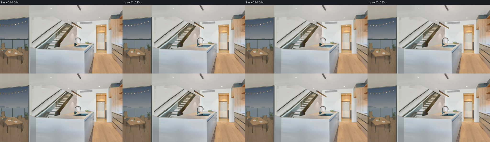
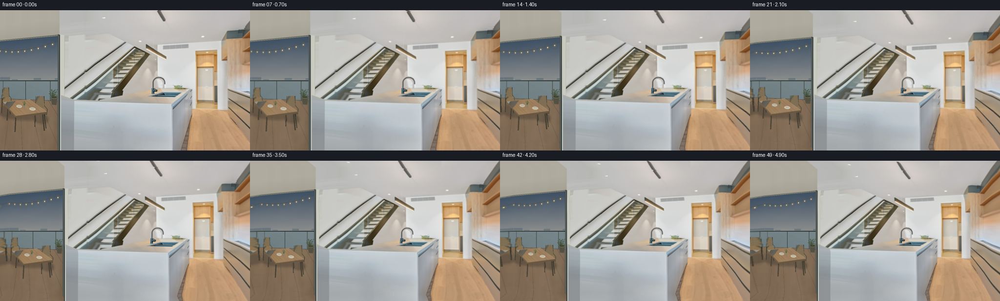
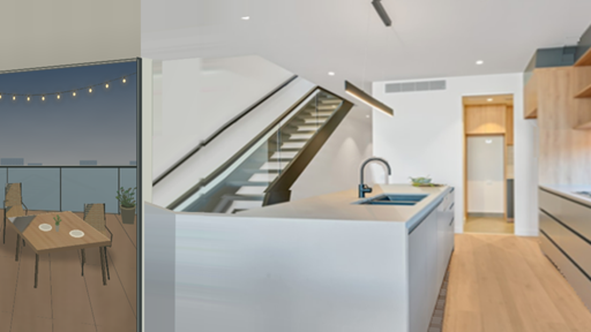
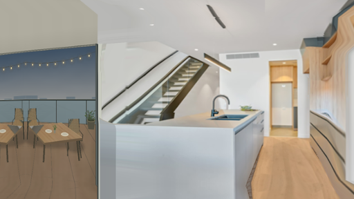
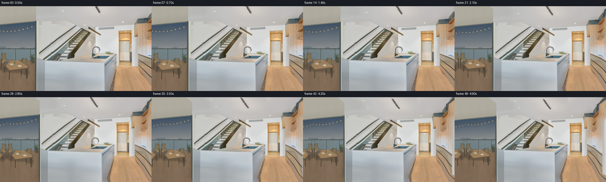
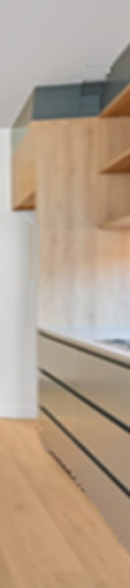
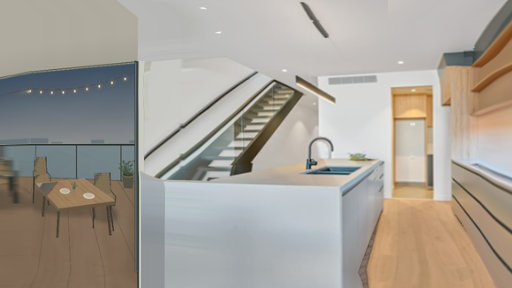

CODING AGENTS AS PIXEL WORLD MODELS
traex/GPT-6.1-Sol · static_080_turn_3
点击播放 · 原生 RGB 像素
逐轮保存的候选
回放视频、检查图与代码变化。
每份候选均可单独播放。实际图片检查记录在下方工具轨迹中。
候选 01播放与检查图
点击播放 · 原生 RGB 像素

展开代码变化
--- 上一保存版本
+++ 本次保存版本
@@ -0,0 +1,103 @@
+from pathlib import Path
+import numpy as np
+import cv2
+from PIL import Image
+from scipy.ndimage import gaussian_filter
+import artifact_io
+
+ROOT = Path(__file__).resolve().parent
+W, H = 512, 288
+PAD = 80
+
+def make_extended(im):
+ # Continue the visible architectural planes in a guard band. Textures are
+ # taken from the supplied view; no generated or external image assets.
+ yy, xx = np.mgrid[-PAD:H+PAD, -PAD:W+PAD].astype(np.float32)
+ sx, sy = xx.copy(), yy.copy()
+ bottom = yy > H-1
+ ry = 2*(H-1)-yy
+ # Terrace boards and the interior timber floor maintain their perspective.
+ ratio = (ry-135.0)/(yy-135.0 + 1e-6)
+ floor_x = 414.0+(xx-414.0)*ratio
+ side_x = 353.0+(xx-353.0)*ratio
+ blend = np.clip((xx-375)/30, 0, 1)
+ sx[bottom] = np.where(xx < 121, 57+(xx-57)*(ry-110)/(yy-110+1e-6),
+ np.where(xx < 353, xx, side_x*(1-blend)+floor_x*blend))[bottom]
+ sy[bottom] = ry[bottom]
+ top = yy < 0
+ sy[top] = -yy[top]
+ # Extrapolate the cropped ceiling track and the sloping skylight edges.
+ ceiling_slope = np.where(xx < 410, 0.61, -0.84)
+ sx[top] = (xx-2*ceiling_slope*yy)[top]
+ left = sx < 0
+ oldx = sx.copy()
+ sx[left] = -sx[left]
+ sy[left] = (sy + 0.212*oldx*np.clip((150-sy)/40,0,1))[left]
+ right = sx > W-1
+ oldx = sx.copy()
+ sx[right] = 2*(W-1)-sx[right]
+ sy[right] = (135+(sy-135)*(sx-414)/(oldx-414+1e-6))[right]
+ sx = np.clip(sx, 0, W-1)
+ sy = np.clip(sy, 0, H-1)
+ extended = cv2.remap(im, sx, sy, cv2.INTER_LINEAR, borderMode=cv2.BORDER_REPLICATE)
+ extended[PAD:PAD+H, PAD:PAD+W] = im
+ return extended
+
+def scene_depth():
+ yy, xx = np.mgrid[-PAD:H+PAD, -PAD:W+PAD].astype(np.float32)
+ z = np.full(xx.shape, 7.6, dtype=np.float32)
+ ceiling = yy < 105
+ z[ceiling] = np.clip(415.0/np.maximum(135-yy[ceiling], 1), 3.1, 7.6)
+ # The glazed doorway / terrace is closer than the back of the room.
+ z[xx < 131] = 3.9
+ # Stair wall, behind the island.
+ m = (xx >= 131)&(xx < 303)&(yy >= 100)
+ z[m] = 5.8
+ # Floor and tall cabinet plane converge toward the room's vanishing point.
+ floor = (xx > 350)&(yy > 200)
+ z[floor] = np.clip(520/np.maximum(yy[floor]-135, 1), 2.9, 7.6)
+ cabinets = (xx > 463)&(yy > 53)
+ z[cabinets] = np.clip(350/np.maximum(xx[cabinets]-414,1), 2.8, 7.6)
+ # Island, represented by planar front, worktop and receding right end.
+ mask = np.zeros(xx.shape, np.uint8)
+ points = np.array([[124,177],[151,186],[352,192],[352,400],[124,400]],np.int32)+PAD
+ cv2.fillPoly(mask,[points],1)
+ z[mask.astype(bool)] = 3.65
+ topmask = np.zeros_like(mask)
+ points=np.array([[151,185],[297,162],[392,161],[352,192]],np.int32)+PAD
+ cv2.fillPoly(topmask,[points],1)
+ tz=3.65+np.clip((192-yy)/31,0,1)*2.75
+ z[topmask.astype(bool)] = tz[topmask.astype(bool)]
+ sidemask=np.zeros_like(mask)
+ points=np.array([[352,192],[392,161],[393,207],[373,288],[366,368],[352,368]],np.int32)+PAD
+ cv2.fillPoly(sidemask,[points],1)
+ sz=3.65+np.clip((xx-352)/40,0,1)*2.75
+ z[sidemask.astype(bool)] = sz[sidemask.astype(bool)]
+ # A small continuous transition prevents tearing at occluding silhouettes.
+ inverse = gaussian_filter(1/z, 5.0)
+ return (1/inverse).astype(np.float32)
+
+def generate():
+ im=np.asarray(Image.open(ROOT/'first_frame.png').convert('RGB'))
+ extended=make_extended(im)
+ Image.fromarray(extended).save(ROOT/'.tmp/extended.png')
+ z=scene_depth()
+ y,x=np.mgrid[0:H,0:W].astype(np.float32)
+ cx,cy=256.0,144.0
+ frames=[im.copy()]
+ for i in range(1,50):
+ t=i/49
+ travel=0.65*(0.3*t+0.7*(3*t*t-2*t*t*t))
+ sx=x.copy(); sy=y.copy()
+ for _ in range(10):
+ dz=cv2.remap(z,sx+PAD,sy+PAD,cv2.INTER_LINEAR,borderMode=cv2.BORDER_REPLICATE)
+ nx=cx+(x-cx)*(1+travel/dz)
+ ny=cy+(y-cy)*(1+travel/dz)
+ sx=.25*sx+.75*nx
+ sy=.25*sy+.75*ny
+ frame=cv2.remap(extended,sx+PAD,sy+PAD,cv2.INTER_LINEAR,borderMode=cv2.BORDER_REPLICATE)
+ frames.append(frame)
+ artifact_io.save(np.stack(frames).astype(np.uint8),ROOT)
+
+if __name__=='__main__':
+ generate()
候选 02播放与检查图
点击播放 · 原生 RGB 像素

展开代码变化
代码未变化；重新保存了产物。
候选 03播放与检查图
点击播放 · 原生 RGB 像素


展开代码变化
--- 上一保存版本
+++ 本次保存版本
@@ -31,11 +31,11 @@
sx[top] = (xx-2*ceiling_slope*yy)[top]
left = sx < 0
oldx = sx.copy()
- sx[left] = -sx[left]
+ sx[left] = np.minimum(-sx[left]*0.18, 8)
sy[left] = (sy + 0.212*oldx*np.clip((150-sy)/40,0,1))[left]
right = sx > W-1
oldx = sx.copy()
- sx[right] = 2*(W-1)-sx[right]
+ sx[right] = (W-1) - 0.12*(sx[right]-(W-1))
sy[right] = (135+(sy-135)*(sx-414)/(oldx-414+1e-6))[right]
sx = np.clip(sx, 0, W-1)
sy = np.clip(sy, 0, H-1)
@@ -87,7 +87,7 @@
frames=[im.copy()]
for i in range(1,50):
t=i/49
- travel=0.65*(0.3*t+0.7*(3*t*t-2*t*t*t))
+ travel=0.52*(0.3*t+0.7*(3*t*t-2*t*t*t))
sx=x.copy(); sy=y.copy()
for _ in range(10):
dz=cv2.remap(z,sx+PAD,sy+PAD,cv2.INTER_LINEAR,borderMode=cv2.BORDER_REPLICATE)
候选 04播放与检查图
候选 05播放与检查图
点击播放 · 原生 RGB 像素

展开代码变化
--- 上一保存版本
+++ 本次保存版本
@@ -31,7 +31,7 @@
sx[top] = (xx-2*ceiling_slope*yy)[top]
left = sx < 0
oldx = sx.copy()
- sx[left] = np.minimum(-sx[left]*0.18, 8)
+ sx[left] = np.minimum(-sx[left]*0.50, 23)
sy[left] = (sy + 0.212*oldx*np.clip((150-sy)/40,0,1))[left]
right = sx > W-1
oldx = sx.copy()
@@ -56,7 +56,7 @@
# Floor and tall cabinet plane converge toward the room's vanishing point.
floor = (xx > 350)&(yy > 200)
z[floor] = np.clip(520/np.maximum(yy[floor]-135, 1), 2.9, 7.6)
- cabinets = (xx > 463)&(yy > 53)
+ cabinets = (xx > 463)
z[cabinets] = np.clip(350/np.maximum(xx[cabinets]-414,1), 2.8, 7.6)
# Island, represented by planar front, worktop and receding right end.
mask = np.zeros(xx.shape, np.uint8)
可观测工具轨迹
实际执行的命令与返回图片。
命令 1exit 0
/bin/bash -lc 'ls -la && cat prompt.txt && cat GENERATION_RULES.md'
命令 2exit 0
/bin/bash -lc 'cat task_spec.json && cat artifact_io.py'
命令 3exit 0
/bin/bash -lc "python - <<'PY' import importlib.util for x in ['numpy','PIL','scipy','cv2']: print(x,bool(importlib.util.find_spec(x))) PY"
命令 4exit 0
/bin/bash -lc "python - <<'PY'
from PIL import Image
im=Image.open('first_frame.png')
im.resize((1024,576)).save('.tmp/large.png')
PY"命令 5exit 0
/bin/bash -lc "cat > generate.py <<'PY'
from pathlib import Path
import numpy as np
import cv2
from PIL import Image
from scipy.ndimage import gaussian_filter
import artifact_io
ROOT = Path(__file__).resolve().parent
W, H = 512, 288
PAD = 80
def make_extended(im):
# Continue the visible architectural planes in a guard band. Textures are
# taken from the supplied view; no generated or external image assets.
yy, xx = np.mgrid[-PAD:H+PAD, -PAD:W+PAD].astype(np.float32)
sx, sy = xx.copy(), yy.copy()
bottom = yy > H-1
ry = 2*(H-1)-yy
# Terrace boards and the interior timber floor maintain their perspective.
ratio = (ry-135.0)/(yy-135.0 + 1e-6)
floor_x = 414.0+(xx-414.0)*ratio
side_x = 353.0+(xx-353.0)*ratio
blend = np.clip((xx-375)/30, 0, 1)
sx[bottom] = np.where(xx < 121, 57+(xx-57)*(ry-110)/(yy-110+1e-6),
np.where(xx < 353, xx, side_x*(1-blend)+floor_x*blend))[bottom]
sy[bottom] = ry[bottom]
top = yy < 0
sy[top] = -yy[top]
# Extrapolate the cropped ceiling track and the sloping skylight edges.
ceiling_slope = np.where(xx < 410, 0.61, -0.84)
sx[top] = (xx-2*ceiling_slope*yy)[top]
left = sx < 0
oldx = sx.copy()
sx[left] = -sx[left]
sy[left] = (sy + 0.212*oldx*np.clip((150-sy)/40,0,1))[left]
right = sx > W-1
oldx = sx.copy()
sx[right] = 2*(W-1)-sx[right]
sy[right] = (135+(sy-135)*(sx-414)/(oldx-414+1e-6))[right]
sx = np.clip(sx, 0, W-1)
sy = np.clip(sy, 0, H-1)
extended = cv2.remap(im, sx, sy, cv2.INTER_LINEAR, borderMode=cv2.BORDER_REPLICATE)
extended[PAD:PAD+H, PAD:PAD+W] = im
return extended
def scene_depth():
yy, xx = np.mgrid[-PAD:H+PAD, -PAD:W+PAD].astype(np.float32)
z = np.full(xx.shape, 7.6, dtype=np.float32)
ceiling = yy < 105
z[ceiling] = np.clip(415.0/np.maximum(135-yy[ceiling], 1), 3.1, 7.6)
# The glazed doorway / terrace is closer than the back of the room.
z[xx < 131] = 3.9
# Stair wall, behind the island.
m = (xx >= 131)&(xx < 303)&(yy >= 100)
z[m] = 5.8
# Floor and tall cabinet plane converge toward the room's vanishing point.
floor = (xx > 350)&(yy > 200)
z[floor] = np.clip(520/np.maximum(yy[floor]-135, 1), 2.9, 7.6)
cabinets = (xx > 463)&(yy > 53)
z[cabinets] = np.clip(350/np.maximum(xx[cabinets]-414,1), 2.8, 7.6)
# Island, represented by planar front, worktop and receding right end.
mask = np.zeros(xx.shape, np.uint8)
points = np.array([[124,177],[151,186],[352,192],[352,400],[124,400]],np.int32)+PAD
cv2.fillPoly(mask,[points],1)
z[mask.astype(bool)] = 3.65
topmask = np.zeros_like(mask)
points=np.array([[151,185],[297,162],[392,161],[352,192]],np.int32)+PAD
cv2.fillPoly(topmask,[points],1)
tz=3.65+np.clip((192-yy)/31,0,1)*2.75
z[topmask.astype(bool)] = tz[topmask.astype(bool)]
sidemask=np.zeros_like(mask)
points=np.array([[352,192],[392,161],[393,207],[373,288],[366,368],[352,368]],np.int32)+PAD
cv2.fillPoly(sidemask,[points],1)
sz=3.65+np.clip((xx-352)/40,0,1)*2.75
z[sidemask.astype(bool)] = sz[sidemask.astype(bool)]
# A small continuous transition prevents tearing at occluding silhouettes.
inverse = gaussian_filter(1/z, 5.0)
return (1/inverse).astype(np.float32)
def generate():
im=np.asarray(Image.open(ROOT/'first_frame.png').convert('RGB'))
extended=make_extended(im)
Image.fromarray(extended).save(ROOT/'.tmp/extended.png')
z=scene_depth()
y,x=np.mgrid[0:H,0:W].astype(np.float32)
cx,cy=256.0,144.0
frames=[im.copy()]
for i in range(1,50):
t=i/49
travel=0.65*(0.3*t+0.7*(3*t*t-2*t*t*t))
sx=x.copy(); sy=y.copy()
for _ in range(10):
dz=cv2.remap(z,sx+PAD,sy+PAD,cv2.INTER_LINEAR,borderMode=cv2.BORDER_REPLICATE)
nx=cx+(x-cx)*(1+travel/dz)
ny=cy+(y-cy)*(1+travel/dz)
sx=.25*sx+.75*nx
sy=.25*sy+.75*ny
frame=cv2.remap(extended,sx+PAD,sy+PAD,cv2.INTER_LINEAR,borderMode=cv2.BORDER_REPLICATE)
frames.append(frame)
artifact_io.save(np.stack(frames).astype(np.uint8),ROOT)
if __name__=='__main__':
generate()
PY
python generate.py"命令 6exit 0
/bin/bash -lc "python - <<'PY'
from PIL import Image
im=Image.open('first_frame.png')
im.crop((448,0,512,288)).resize((256,1152)).save('.tmp/right.png')
PY"命令 7exit 0
/bin/bash -lc "python - <<'PY'
p='generate.py'
s=open(p).read().replace('sx[left] = -sx[left]','sx[left] = np.minimum(-sx[left]*0.18, 8)').replace('sx[right] = 2*(W-1)-sx[right]','sx[right] = (W-1) - 0.12*(sx[right]-(W-1))').replace('travel=0.65*','travel=0.52*')
open(p,'w').write(s)
PY
python generate.py"命令 8exit 0
/bin/bash -lc "python - <<'PY'
p='generate.py'
s=open(p).read().replace('sx[left] = np.minimum(-sx[left]*0.18, 8)','sx[left] = np.minimum(-sx[left]*0.50, 23)').replace('cabinets = (xx > 463)&(yy > 53)','cabinets = (xx > 463)')
open(p,'w').write(s)
PY
python generate.py
python - <<'PY'
from PIL import Image
import numpy as np
f=np.load('pixels.npz')['pixels']
im=np.array(Image.open('first_frame.png').convert('RGB'))
p=(im[:,:,0].astype(np.uint32)<<16)|(im[:,:,1].astype(np.uint32)<<8)|im[:,:,2].astype(np.uint32)
assert f.shape==(288,512,50)
assert np.array_equal(p,f[:,:,0])
print('Validated 50 frames, 512x288, exact first frame.')
PY"视觉工具实际返回图片 1
视觉工具实际返回图片 2

视觉工具实际返回图片 3

视觉工具实际返回图片 4

视觉工具实际返回图片 5

视觉工具实际返回图片 6

保存候选 5 份；完成命令 8 次；可验证图片返回 6 张。原始 API 响应与完整日志保留在本地。